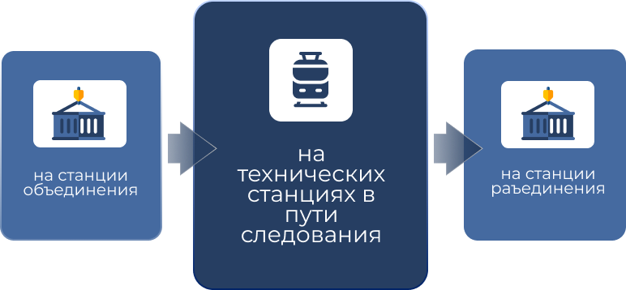

Работа с перевозочными документами

На станции разъединения объединенного контейнерного поезда:
Ответственный работник станции
-
по поступившей информации от дежурного по станции о прибытии в разъединение соединенного контейнерного поезда принимает пакет перевозочных документов
-
по номеру и индексу поезда, указанным на контрольном бланке формы ДУ-81с с отметкой «объединенный», убеждается в принадлежности документов данному соединенному поезду, проверяет целостность и сохранность пакета, общее количество пачек в пакете (или целостность, сохранность и общее количество пакетов)
-
записывает в Книгу приема и сдачи перевозочных документов машинистами поездных локомотивов формы ДУ-40 время приема документов, номер и индекс поезда, количество пачек в пакете (или общее количество пакетов) и фамилию машиниста
-
производит вскрытие пакета и разделение перевозочных документов (общий контрольный бланк формы ДУ-81с подлежит исключению) по принадлежности к каждому контейнерному поезду и далее работает с перевозочными документами установленным порядком
В случае утраты и разъединения перевозочных документов от вагона (ов):
-
ответственный работник станции оформляет акт общей формы в информационной системе ЕАСАПР М по случаю обнаружения разъединения груза и документов во взаимодействии с актово-розыскной группой станции и розыском бездокументных вагонов
-
начальник станции в суточный срок организует работу по розыску груза (перевозочных документов) и направляет оперативное донесение о задержке вагона (ов) в адрес начальника станции отправления и ТЦФТО дороги отправления вагонов, начальника станции последнего объединения поезда